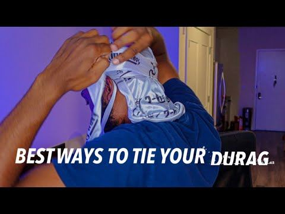

Waves on a Busy Schedule: The Minimum Effective Routine
The full wave routine assumes a life with slack in it. Real life — shifts, kids, studies, second jobs — often has none, and routines designed for ideal weeks die in real ones. This guide is the minimum effective dose: the smallest routine that genuinely maintains a pattern, built from the fundamentals Cross I Bear (@TheCrossIBear) teaches below. Fifteen focused minutes a day and a nightly tie will not build elite waves at record speed — but they will hold and slowly grow a pattern through your busiest season, which is the difference between a pause and a restart.
The non-negotiables
Strip everything away and two things remain load-bearing: one real brush session daily, and compression every night. The session can be fifteen minutes — but it must be a session: moisturised hair, correct angles, all sections, finish, tie. The night tie is the other pillar; a pattern compressed nightly loses ground far slower than it gains, which is what makes maintenance math work on a minimum dose.
Everything else in wave care is optimisation. Products beyond a basic moisturiser, second daily sessions, long mirror work — valuable, all of it, and all of it optional during a busy season. Protect the two pillars and the pattern survives the season intact.
Batching and anchoring
Anchor the session to something immovable: immediately after your shower, or during a commute podcast, or the first fifteen minutes of screen time you were going to spend anyway. Busy people do not find time; they attach new habits to old ones. The brush lives where the anchor is — by the shower, in the car, next to the couch — never in a drawer you must remember to open.
Batch the weekly work: wash day doubles as the long session and the mirror check. One calendar block, three jobs done. And keep the kit minimal and duplicated where you live your life — a brush and cap at home, a brush at work or in the bag. Friction is the enemy of busy routines; every removed step is a week the routine survives.
Busy-season honesty
Do not start a wolf or a pattern change in your busiest month — maintenance is the busy-season mode, and ambition returns when the calendar does. Judge the routine by the only metric that matters in a hard season: is the pattern still here? If yes, the system worked.
When life eases, scale back up gradually — add the second session first, then the extras. The wavers who keep patterns for decades are rarely the ones with the most time. They are the ones whose minimum routine never hit zero — because a pattern, like fitness, is far easier to keep than to rebuild.
Watch: beginner fundamentals from Cross I Bear — minimum-effective means fundamentals only, done perfectly
Video: “How To Get Elite Waves For Beginners: S1E7” by Cross I Bear (@TheCrossIBear) · Watch on YouTube
Shop the gear
Everything in this guide runs on the right gear: a durag that holds compression without slipping, a cap that stays put, and fabric that treats your hair right. The durag.store launch lineup is built to that standard — dual-layer construction, long tails, and stitching made to survive the routine. Join the launch list and use code GOLDSTANDARD for 15% off your first order.
Keep learning
- The Nighttime Routine for Waves: 10 Minutes That Protect 24 Hours — Basic · Routines
- The Morning Routine for Waves: Untie, Lift, and Go — Intermediate · Routines
- Waves at the Gym: Training Hard Without Losing the Pattern — Basic · Routines
Sources: Video — “How To Get Elite Waves For Beginners: S1E7” by Cross I Bear (@TheCrossIBear), youtube.com. Guide written by the durag.store Wave Lab.